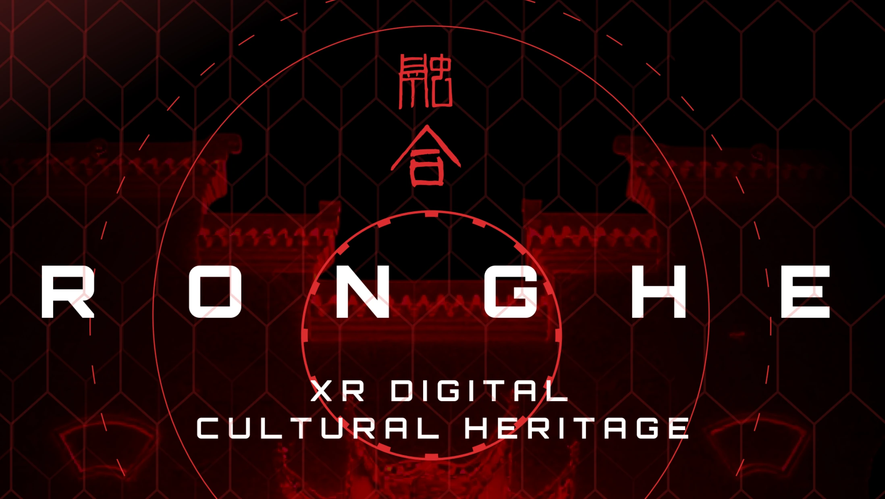

01
CAPTURE / 数字采集
把一座建筑
留在时间之外
通过摄影测量、Gaussian Splatting 与三维建模，记录梁柱、窗棂和材料留下的时间痕迹。
- 空间扫描
- 建筑测绘
- 高保真重建

01 DIGITAL HERITAGE EXPERIENCE
我们以数字重建保存空间，以 XR 唤醒身体记忆， 再通过 AI 共创与实体制造，让每个人成为文化的续写者。
00 / 项目主张
融合 XR 以融和馆及其江南建筑语境为原点，建立从真实空间到数字资产， 再从个人创意回到实体作品的完整文化体验闭环。
01 / IMMERSIVE JOURNEY
CAPTURE / 数字采集
通过摄影测量、Gaussian Splatting 与三维建模，记录梁柱、窗棂和材料留下的时间痕迹。
ENTER / 沉浸探索
在 XR 中自由穿行融和馆，触发构件、声音与叙事，让空间知识转化为身体经验。
CREATE / 共创输出
选择传统构件并重新组合，借助 AI 完善造型，最终通过 3D 打印把虚拟创意带回现实。
02 / DIGITAL STRUCTURE ARCHIVE
从十组基础节点到屋顶支撑柱与完整榫卯合集，所有结构均来自项目原始 FBX 资产。 拖动旋转、滚轮缩放，近距离观察不依赖钉与胶的东方构造逻辑。
03 / CO-CREATION LAB
选择一种传统纹样，观察它如何从历史语汇转译成当代形态。
01 选择文化母题
保留窗棂的几何秩序，生成适用于灯具与空间装置的模块化结构。
04 / EVIDENCE
参与者认为 XR 体验增强了
与传统文化的情感连接
共创时间缩短
设计多样性提升
“第一次觉得古建筑不是一个遥远的知识点，而是我可以走进去、触碰并继续创造的东西。”— 体验测试参与者 07
* 数据来自项目原型阶段用户测试，展示数值待正式研究报告复核。
05 / APPLICATIONS
融合 XR 可被配置为展览、课程、文旅体验与公共文化项目。
沉浸式数字展陈 · 文物交互叙事
研学课程 · XR 共创工作坊
数字导览 · 在地文化体验
数字资产授权 · 定制文创开发
06 / LET'S CREATE
如果你正在筹备一场展览、一门课程，或想让一处文化空间以新的方式被看见，欢迎和我们聊聊。
融